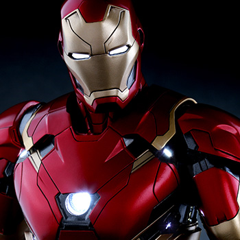
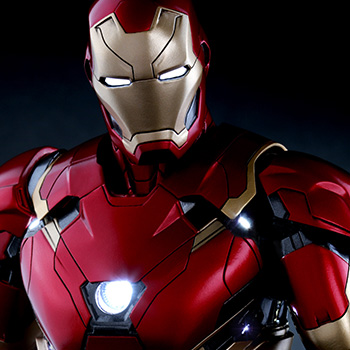

Wounded, captured and forced to build a weapon by his enemies, billionaire industrialist Tony Stark instead created an advanced suit of armor to save his life and escape captivity. Now with a new outlook on life, Tony uses his money and intelligence to make the world a safer, better place as Iron Man.
Anthony "Tony" Stark was born to Howard Anthony Stark and Maria Collins Carbonell Stark, owners of the prominent US firm, Stark Industries. As a boy, Tony was fascinated with building and controlling machines. At the age of 15 Tony entered the undergraduate electrical engineering program at the Massachusetts Institute of Technology (MIT), and graduated with two master’s degrees by age 19. Tony went to work for Stark Industries, but showed more interest in living a reckless playboy lifestyle than using his engineering skills. At the age of 21, Tony inherited Stark Enterprises when his parents were killed in a car accident secretly orchestrated by rival corporation Republic Oil (later ROXXON). Still lacking in business acumen, Tony promoted secretary Virginia "Pepper" Potts to be his executive assistant and left the majority of his workload on her so that he could avoid what he saw as a burden.
Tony personally attended a field test of his military hardware at one of his international plants; however, soon after his arrival Stark’s party was attacked by a gang of terrorists led by the Sin-Cong revolutionary Wong Chu. During the skirmish, a land mine went off and lodged a piece of shrapnel near Tony’s heart. Taken back to Wong-Chu’s camp, Tony shared a cell with Professor Ho Yinsen, a world-famous physicist. Wong-Chu demanded that the two scientists develop advanced weaponry for his forces. Knowing that he could not live long with the shrapnel so close to his heart, Tony proposed that he and Yinsen devote their gifts to creating one of the battlesuits he had been developing, equipped with a magnetic field generator to prevent the shrapnel from reaching his heart. The armor they created became the first true Iron Man armor and was equipped with crude magnetic weaponry for defense. While the armor’s battery was being powered, some of Wong-Chu’s men attempted to break in on the proceedings. Yinsen went to create a diversion and was shot to death by Wong-Chu’s men. When the battery had finished charging, Tony went into battle as Iron Man and tore Wong-Chu’s camp apart. He eventually returned to the USA with the aid of US Marine James "Rhodey" Rhodes. Tony offered Rhodey a job with his company should he ever need one.
Anthony Edward "Tony" Stark
6'1"; (in armor) 6'6"
225 lbs.; (in armor) 425 lbs.
None; Tony's body had been enhanced by the modified techno-organic virus, Extremis, but it is currently inaccessible and inoperable.
Tony has a genius level intellect that allows him to invent a wide range of sophisticated devices, specializing in advanced weapons and armor. He possesses a keen business mind.
The Avengers, Initiative, Hellfire Club (outer circle), S.H.I.E.L.D., Illuminati, Thunderbolts, Force Works, Queen's Vengeance, Alcoholics Anonymous